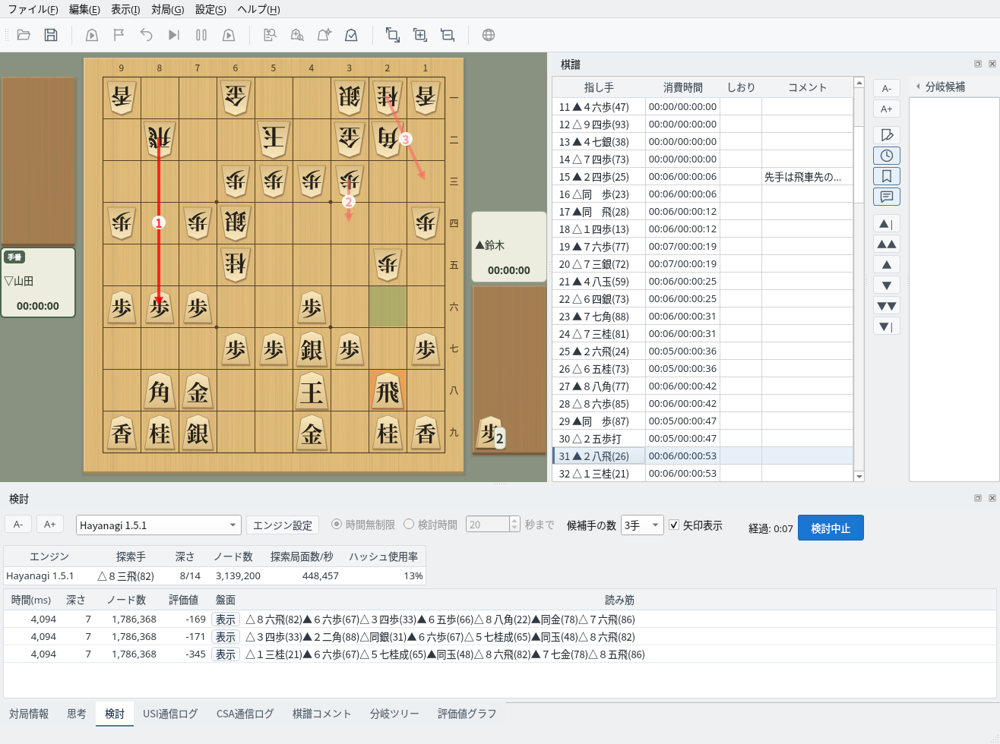
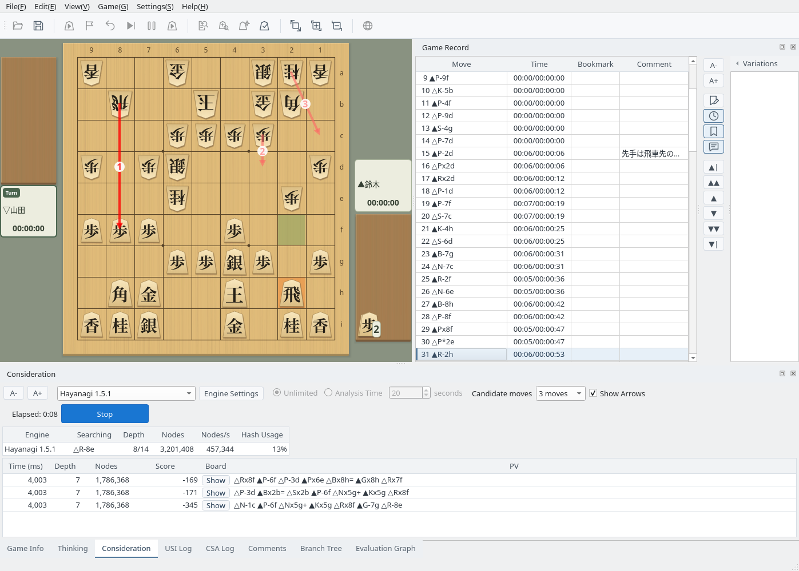
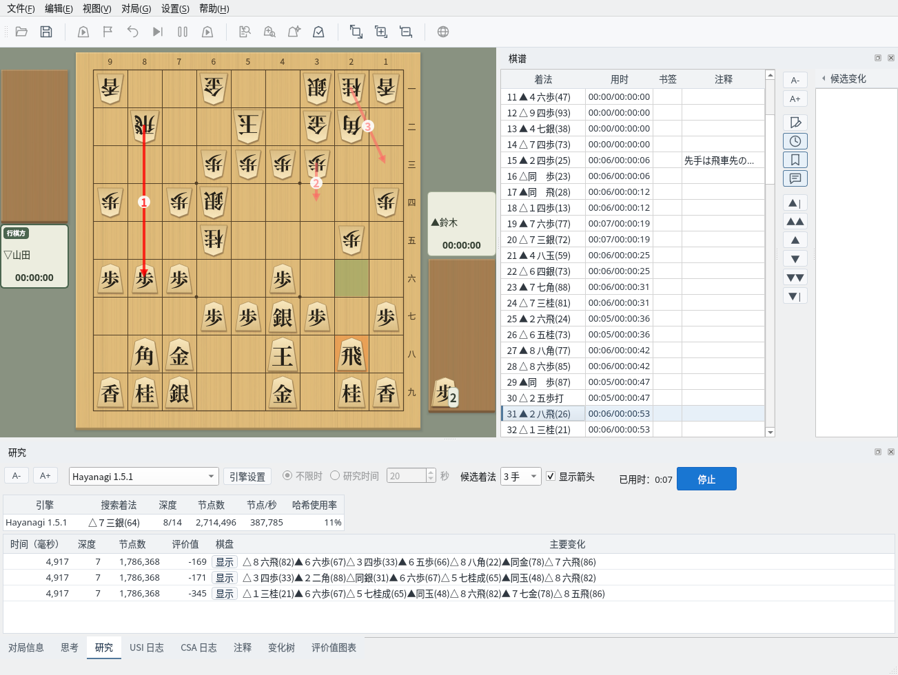
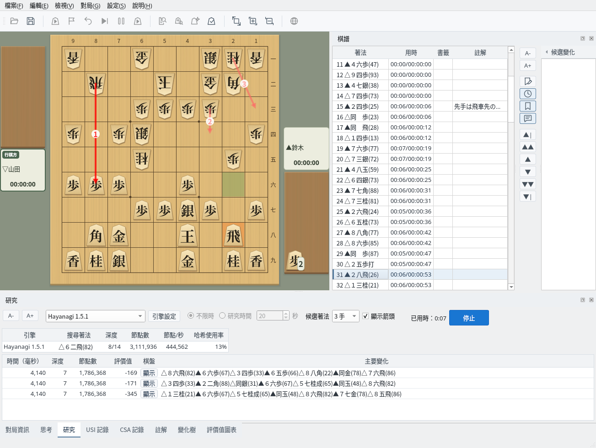
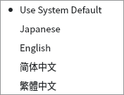
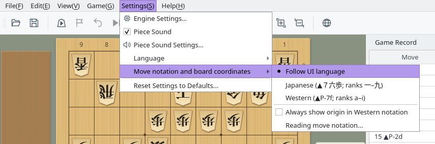
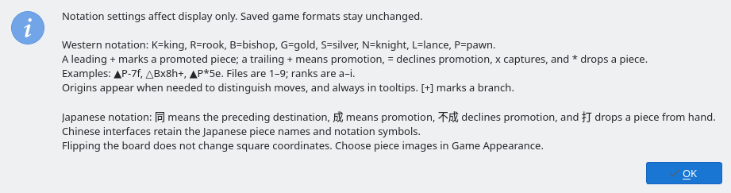
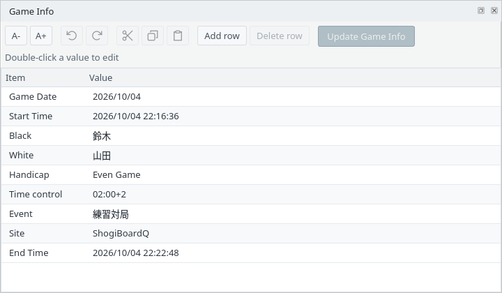

Japanese, English, and Chinese (Simplified and Traditional) interfaces, switchable in Settings
Screenshots were captured on Linux. Apart from the four interface examples under Each Language, they use the English interface.
Each screenshot shows the same Japanese game record under Consideration
Menus, buttons, and tabs appear in Japanese. Moves use Japanese notation (such as ▲２六歩), and board ranks are 一 to 九.

Japanese interface: a Japanese game record under Consideration
Menus (File, Edit, View, Game, Settings, Help) and tab names (Game Info, Thinking, Consideration, and so on) appear in English. Moves use Western notation (such as ▲P-2f), and board ranks are a to i.

English interface: a Japanese game record under Consideration
Menus and tab names appear in Simplified Chinese. Moves keep Japanese notation, including the piece names and symbols such as 同, 成, and 打.

Simplified Chinese interface: a Japanese game record under Consideration
Menus and tab names appear in Traditional Chinese with Taiwanese terminology. As with Simplified Chinese, moves keep Japanese notation.

Traditional Chinese interface: a Japanese game record under Consideration
Choose the interface language from Settings → Language
Choose Settings → Language in the menu bar. In the Japanese interface, it is 設定 → 言語設定.

Settings → Language: the current language is marked with ●
After you choose a language, a message asks you to restart. When you restart the application, menus, dialogs, tab names, and buttons all appear in the new language.
Choose the move notation separately from the interface language
Choose it from Settings → Move notation and board coordinates. Changes take effect after a restart.

Settings → Move notation and board coordinates
Choose Move notation and board coordinates → Reading move notation… to see the notation guide at any time.

The Reading move notation… guide
Changing the language or notation does not change the game record itself
Player names, event names, comments, and unknown fields are shown in their original text without translation. Known game information labels, handicaps, and values such as unlimited time are translated for display only; editing works with the original strings.

Game Info: labels and the handicap are translated; player and event names keep the original text
Every language uses the KIF, KI2, CSA, JKF, USI, and USEN formats for saving and copying game records. KIF and KI2 moves are written in Japanese. There is no save format specific to Western notation.
With Use System Default, the language depends on the environment ShogiBoardQ starts in
With Use System Default, ShogiBoardQ chooses the language from the environment variables it was started with. On Linux, LANGUAGE, LC_ALL, LC_MESSAGES, and LANG take priority in that order. Even if your desktop uses another language, ShogiBoardQ starts in English when the program that launches it sets these variables to English.
LANGUAGE=en_US:en and LC_MESSAGES=en_US.UTF-8 to the build environment. If the run configuration still uses Build Environment as its base environment (the Qt Creator default), ShogiBoardQ inherits these variables and starts in English. In Projects → Run → Environment, set Base environment for this run configuration to System Environment.